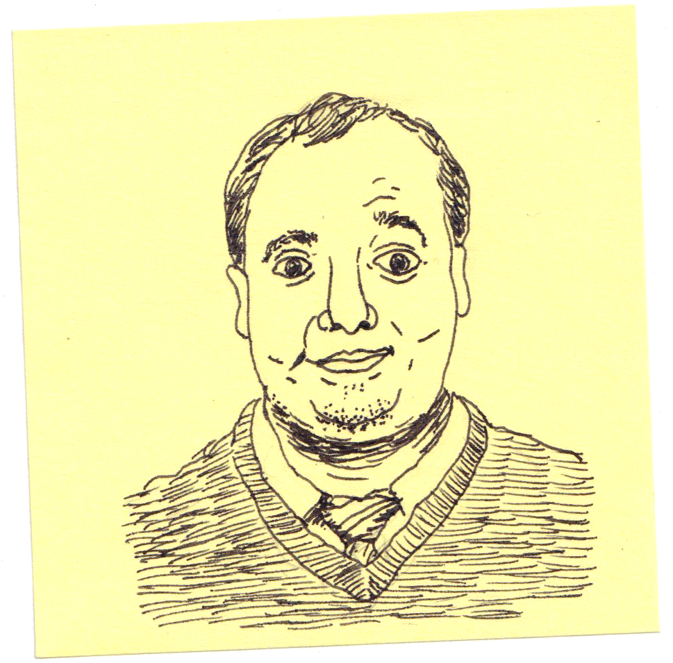

Lutz
If you watched the television show 30 Rock you may remember the lovable loser J.D. Lutz. Years ago on a visit to NYC I was able to see John Lutz (who portrayed the Lutz character), Scott Adsit, and Jason Sudeikis perform improv at the Upright Citizens Brigade theater. They weren’t firing on all cylinders that night, which is just how improv goes sometimes, but it still got me curious to bring up some Wikipedia pages after I returned home.
{kind=link}
As I loaded the page for John Lutz, my eyes rolled to the right as usual to look at the biographic overview. I skimmed, started returning back to the article, and then made an audible noise as my brain caught up with my vision, which had returned to that bio section. That couldn’t be!

I kind of laugh when people claim we should doubt all of Wikipedia just because sometimes its facts aren’t quite right. First, how did you know that Encyclopedia Britannica had all of its facts right? Errors probably slipped in. Yet my years of ongoing subconscious laughter ended abruptly when I saw what I was seeing. Perhaps all this Wikipedia stuff was truly a mix of fifty percent fact, fifty percent fiction.
On this little Wikipedia bio was I really reading that John Micahel Lutz was supposedly born in my hometown?! Could this be true?
I grew up in a sparsely populated corner of Minnesota. The town housed 5,000 people. The entirety of my home county only contained 10,000 souls. Just as Minnesota claims any famous person remotely associated with the state (👋 Vince Vaughn, Jessica Biel, and Stifler), every Minnesota town does the same for its past residents. Where I grew up we were treated annually to newspaper articles about Phil Bruns, who played Morty Seinfeld for one episode before being replaced.
Bruns would also write a letter to the editor of our local newspaper once or twice a year. He would comment on local events he had read in the newspaper, or perhaps share worldly goings-on that he thought might be beneficial for us rural folk to hear. He seemed to genuinely want to stay connected to this place he had left so long ago. My perception at the time was that he enjoyed getting attention because the rest of the world probably didn’t really know who he was. A little bit of fame was better than none at all.
My mother-in-law loves to research genealogy so I asked her to put the truth to this lie that Lutz was born where I was born. How could it be that this star was in our midst, but our local newspaper had yet to pick up on it? To my great surprise she did some digging and discovered that, indeed, he had been born where Wikipedia said he was born. His brother was also born in the same small town. His family lived in the area for at least four years before moving on.
So one more time this small town is famous, though it hasn’t yet realized it. Maybe someday I’ll tip them to the truth. And to be fair, Phil Bruns actually had a long working career as an actor. Once again proving I don’t know what I don’t know!
August 3, 2022